面向对象程序设计 ¶
翁恺班的笔记，补充了陈翔班课程的部分内容
Using Objects Week 1(ChenXiang)¶
The string class¶
| C++ | |
|---|---|
1 2 3 4 5 | |
| C | |
|---|---|
1 2 3 4 5 6 7 8 | |
| C++ | |
|---|---|
1 2 3 4 | |
| C++ | |
|---|---|
1 2 3 4 5 6 7 8 9 10 11 12 13 | |
File I/O¶
| C++ | |
|---|---|
1 2 3 4 5 6 7 8 | |
A Quick Tour of C++ Week 2(ChenXiang)¶
STL Week 3(ChenXiang)¶
Standard Template Library
[Definition]Part of the ISO Standard C++ Library,Data Structure and Algorithms
- Containers:class templates,data structures
- Algorithms
- Iterators:uniform access of manners
Containers¶
- Sequential:array(static),vector(dynamic),deque(double-ended queue),(forward_)list
- Associative:set(key),map(key-value),multiset,multimap
- Unordered associative
- Adaptors:stack,(priority_)queue
vector¶
- Constructor,destructor
- Element access:at,operator[],front,back,data,...
- Iterators:begin,end,cbegin,cend,...
- Capacity:empty,size,reserve,capacity,...
- Modifiers:clear,insert,erase,push_back,...
| C++ | |
|---|---|
1 2 3 | |
list¶
(doubly-linked)
push_back,list<string>::iterator p;
map¶
map<string,float> price;
multi-map:one key corresponds to multiple values
stack¶
adaptor: 转换器
Algorithms¶
- [first,last)
- for_each,find,count,...
- copy,fill,transform,replace,rotate,...
- sort,partial_sort,nth_element,...
- set_difference,set_union,...
- accumulate,partial_sum,...
Iterators¶
STL
- input iterator
- output iterator
- forward iterator:++p,p++,*p,==,!=,=(forward list,unordered_map,unordered_set)
- bidirectional iterator:...,--p,p--(list,set,map)
- random access iterator:p+=i,p-=i,p+i,p-1,p[i],<,>,<=,>=,p2-p1(vector,deque)
- 不支持迭代器：stack,queue
begin(),end()
end()常不能达到，用!=stl.end()作为结束条件
| C++ | |
|---|---|
1 2 3 4 5 6 7 8 | |
Typedefs¶
auto: 编译器推断
using
typedef map<Name,list<PhoneNum>> PB;
Defining Class Week 3¶
| C++ | |
|---|---|
1 2 | |
ANS:No,because we need to tell the function which struct to deal with
Solution:put the functions into the struct -> member functions class
::所有格resolver
| C++ | |
|---|---|
1 2 3 4 5 6 | |
this is a pointer points to the object
Object¶
Object = Attributes + Service = Data(private) + Operations(Public)
UML:name,attribute,service(operations)
class≈struct(class默认访问权限为private而struct为public)
任何class都需要分在.h与.cpp两个文件中，.h提供声明供他人使用，.cpp提供private实体
One class definition per header.h
Only declarations are allowed in .h
- extern var
- function prototypes
- class/struct definition
include¶
- #include "xx.h"：优先搜索 .cpp 文件所在目录再到指定位置搜索
- #include
：指定位置搜索 自带头文件 环境变量 -I - #include
：与 相同
Constructor¶
What will happen if we forget to initialize?
Without initialization,we won't get fixed value.
| C++ | |
|---|---|
1 2 3 4 5 6 7 8 9 10 11 12 13 14 15 16 | |
没有参数的构造函数：default
成员变量的赋值
- 在结构体中赋值
- 在构造函数头中添加初始化列表
Point(int xx,int yy):x(xx),y(yy)成员变量名 ( 初始化值 ) - 在构造函数中赋值
- 以上三种按序进行
| C++ | |
|---|---|
1 2 3 4 5 6 7 8 9 10 11 12 | |
Destructor¶
| C++ | |
|---|---|
1 2 3 4 5 6 7 | |
goto and switch?Not allowed.
Inside Object Week 4¶
what to do and how to do
Access Control¶
- public
- friend: 授权（所有）私有成员，被以下接收
自由函数
类中的函数
整个类 - private: 私有的边界是类，不是对象
同一类的不同对象可以互相访问private成员
e.g.拷贝构造可以直接利用私有变量传参 - protected: 子类可以访问
Objects in different places¶
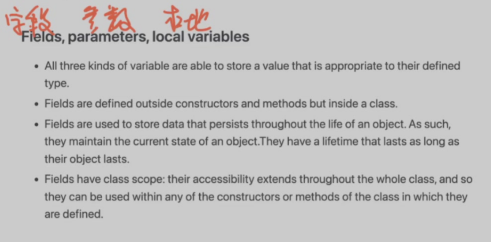
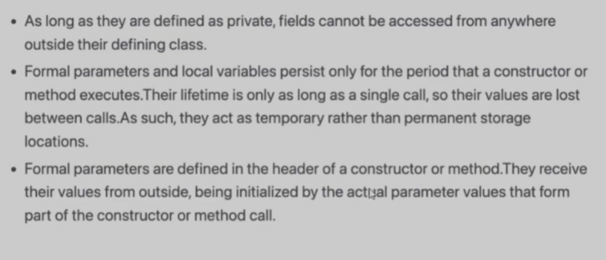
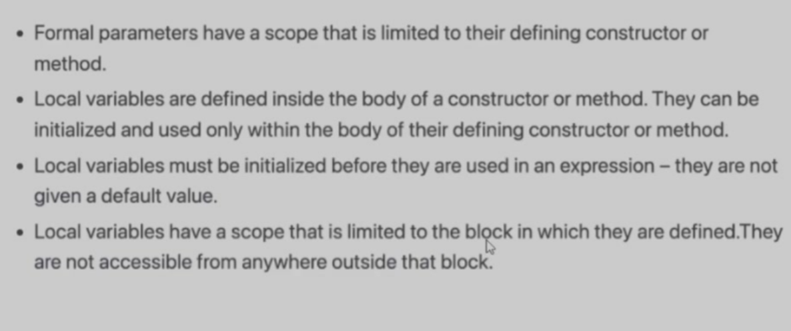
任何一个对象都只属于一个具体的类
Static¶
Initialization Dependency:not guaranteed
strong recommend:no global vars!
- static storage
- restricted access
use static only inside functions and classes
- static free function:deprecated
- static global vars:deprecated
- static local vars:persistent storage
- static member vars:shared
- static member functions:shared
static object:initialized when first called,destruct as a global var
static member:不在class的存储空间中，被不同对象共享（被视为同一个）
| C++ | |
|---|---|
1 2 3 4 5 6 7 | |
this,不能访问任何非静态成员变量或函数不需要制造对象即可调用(
应用：提供制造类对象的方法，作为制造函数
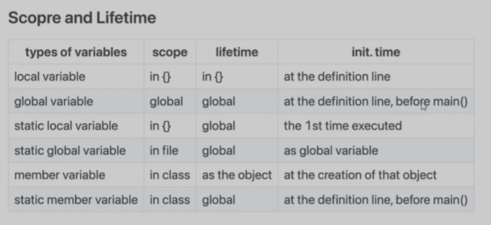
local vars 的空间分配发生在进入函数时，编译器会在进入函数时算好所有本地变量需要的最大空间与地址
static local variable: 在程序结束前析构，在函数内访问
static member variable的构造与析构与global variable相同，在类内访问
!!! danger "static 变量 / 函数必须在类外 (.cpp) 中声明！
Constant object¶
How can the object be protected from change?
Solution:declare member functions const
| C++ | |
|---|---|
1 2 3 4 5 6 7 8 | |
静态成员变量不可能是const，因为没有this指针，只能在初始化列表初始化(const是无用的，const确保类对象不被修改，而static member不属于类)
const and non-const member function can coexist(overload)
Memory model Week 4(ChenXiang)¶
variables¶
| C++ | |
|---|---|
1 2 3 4 5 6 7 8 9 | |
- Global data:global vars,static global vars,static local vars(i,j,l,str)
- Stack:local vars(k)
- Heap:dynamically allocated vars(*p)
global vars:vars defined outside any functions and classes and can be shared between .cpp files(extern)
static vars:inhibit to be accessed outside .cpp
static local vars:keep its state btw functions
static
- restricted access scope
- persistent storage
reference¶
ps = &s,(*ps).length(),ps->length()
绑定别名(alias)(一次性不可计算的指针)，通过引用直接操作原始变量，共享存储，不是指针，不需要解引用
| C++ | |
|---|---|
1 2 3 4 5 6 7 8 9 10 11 12 13 14 | |
| C++ | |
|---|---|
1 2 3 4 5 6 7 8 9 10 | |
| C++ | |
|---|---|
1 2 3 4 5 6 7 8 9 10 | |
* 右值引用 ¶
| C++ | |
|---|---|
1 2 3 4 | |
dynamic memory allocation¶
| C++ | |
|---|---|
1 2 3 4 5 6 | |
cannot delete twice but can delete nullptr
new 返回的是指针
| C++ | |
|---|---|
1 2 | |
| C++ | |
|---|---|
1 2 3 4 5 6 7 8 9 10 | |
constant¶
| C++ | |
|---|---|
1 2 3 4 5 6 7 | |
const is an internal linkage
- Compile time constants
- Run-time constants
C++ 1 2 3 4 5 6 7 8 9 10
//compile time const int class_size = 12; //store in .text int finalgrade[class_size]; //legal //run time int x; cin >> x; const int size = x; double classaverage[size]; //error,static array length must be fixed when compiling!C++ 1 2 3 4 5 6 7 8 9 10
int a[] = {53,54,55}; int * const p = a;// p(pointer) is a const *p = 20; //legal p++; //illegal const int *p = a; // (*p)(the object pointer p points to) is a const *p = 20; //illgal p++; //legal //不能通过指针修改变量（变量本身能否修改取决于变量本身是否有const） //观察const在*左边还是右边String literals:in .text,read onlyC++ 1 2 3 4 5 6 7 8 9 10
int i; const int ci; int* ip; const int* cip; ip = &i; ip = &ci; //illegal,ci cannot be modified but ip can,this is not allowed cip = &i; cip = &ci; *ip = 54; //always legal *cip = 54;//never legalC++ 1 2 3 4 5 6
(const)char* s = "Hello World!"; //sizeof(s) = 8 //s in stack,"Hello World!" in .text char s[] = "Hello World!"; //in stack //sizeof(s) = 14C++ 1 2 3 4 5 6
void f(const int* x) { (*x)++;//illegal } //实际设计中常通过传指针替代传结构 //使用const修饰确保指针指向内容不被修改
Inside Class Week 6¶
Overload¶
| C++ | |
|---|---|
1 2 3 4 5 6 7 8 9 10 11 12 13 | |
| C++ | |
|---|---|
1 2 3 | |
| C++ | |
|---|---|
1 2 3 4 5 6 7 | |
不同的返回类型不构成重载
| C++ | |
|---|---|
1 2 3 4 5 6 7 8 9 10 11 12 13 14 15 16 17 18 19 20 21 22 23 24 | |
不能循环代理
Default argument¶
在成员函数的参数表中放入默认值
| C++ | |
|---|---|
1 2 3 4 5 6 7 8 9 10 11 12 13 14 15 16 | |
void k(int a,int x=0,int y):not allowed,default arguments written from right to left默认参数值写在声明(.h)中而不要写在定义(.cpp)中
因为参数值是依据头文件由编译器填入的（与函数内部无关）
Inline functions¶
overhead( 额外开销 ) for a function call:context_switch
inline是C语言的特性
| C++ | |
|---|---|
1 2 3 4 5 6 7 8 | |
inline的代价:浪费空间需要在声明与定义repeat
inline关键字不会在obj中产生任何代码(无法链接)
| Bash | |
|---|---|
1 2 | |
inline函数的body写在.h中，以供编译器'抄写'Better than
define,inline会检查变量的类型. 是否真的
inline是由编译器根据函数大小或函数是否递归、循环、是否有静态变量自行决定的
Composition Week 7¶
composition:construct new object with existing objects
Reuse the implementation
ways of composition
- fully(Ctor and Dtor are automatically called)(Only C++)
- by reference
logical relationship is not fully(e.g.supervisor & employee)
size-of is unknown beforehand
resource is to be allocated/connected at run time(exception)
| C++ | |
|---|---|
1 2 3 4 5 6 7 8 9 10 11 12 13 14 15 16 17 18 | |
传值构造
| C++ | |
|---|---|
1 2 3 4 5 6 7 8 9 10 11 12 13 14 15 16 17 18 19 20 | |
| C++ | |
|---|---|
1 2 3 4 5 6 7 8 9 10 11 12 13 14 15 16 17 18 19 20 | |
private.Example:clock display
Inheritance Week 8¶
Inheritance is to take the existing class,clone it,and then make additions and modifications to the clone.
Reuse the interface
OOP的三大特性：封装，继承，多态
Example:DoME(Database of Multimedia Entertainment)
- CD:title,artist,tracks,playingtime,got-it,comment
- DVD:title,director,playingtime,got-it,comment
listandprint
可修改：可维护性
不需要修改：可扩展性
基类（父类）->派生类（子类）
What does it inherited?¶
- private member vars.
inaccessible
exist in derived class(内存中先于子类的member vars，父类嵌入子类对象) - public member functions
are public mumber functions of derived class too - private member functions
inaccessible in derived class - protected members
fully and only accessible in derived class - static members
a change to all
父类先被 Ctor 后被 Dtor
Name hiding¶
子类中重写父类 overloaded 函数中的一个，会导致其他重载函数隐藏
Use virtual to affect function overloading(Polymorphism)
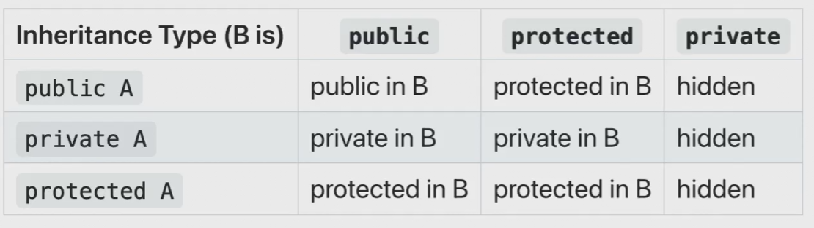
private继承可以理解为composition
Polymorphism Week 9 - 10¶
Subtyping
| C++ | |
|---|---|
1 2 3 | |
| C++ | |
|---|---|
1 2 3 4 5 6 7 8 9 10 | |
casting¶
casting: 类型转换
| C++ | |
|---|---|
1 | |
| C++ | |
|---|---|
1 2 3 4 5 6 | |
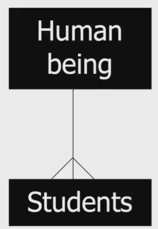
virtual¶
[Question] What's the point of saying it's a subclass object?
[Example] Shapes:Rectangle,Circle & Ellipse
Operations:render,resize,move
Data:center
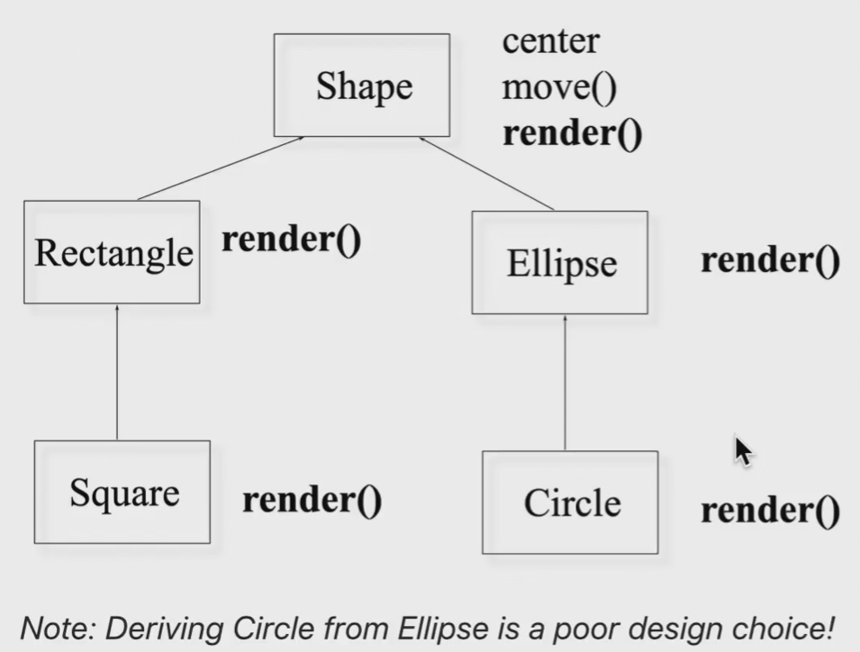
virtual (together with pointer) calls the relevant subclass member function(dynamic binding)| C++ | |
|---|---|
1 2 3 4 5 6 7 8 9 10 11 12 13 14 | |
static binding:call the function as the code
dynamic binding:call the function of the object
virtual functions
- non-virtual:compiler generates static
- virtual
can be transparently overridden(覆盖)
objects carry a pack of their virtual functions
compiler checks pack and dynamically call
How does virtual work?¶
note:the sizeof a class with no member var is '1'(not '0' which is unscientific)
without virtual,sizeof(subclass) = sizeof(superclass) + 4 * number of member vars(unless sizeof(superclass) == 1)
with virtual(no matter how many),a vptr(virtual pointer) is generated,which points to vtable(owned by the class)
vtable consists all the function pointer in the class
sizeof(vptr) = 8(in x64) or 4(in x86)
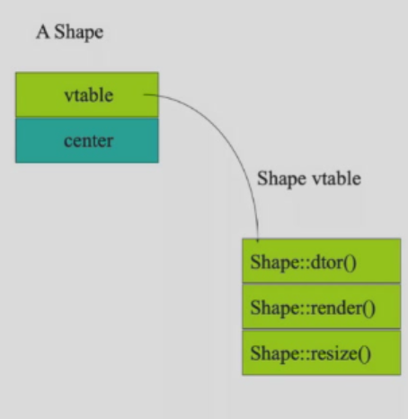
| C++ | |
|---|---|
1 2 3 4 5 6 7 | |
vptr won't be transferred,because vptr is generated in constructor
Virtual destructors¶
Why?
| C++ | |
|---|---|
1 2 3 | |
Therefore,every class ought to have a vptr
Override¶
Superclass and subclass define methods with the same signature(function prototype)
Suppose D is derived from B,should D::f() and B::f() have the same input type and output type?
| C++ | |
|---|---|
1 2 3 4 5 6 7 8 9 10 11 12 13 | |
Only override on virtual functions!
Shape is an abstruct class,we actually don't want a shape object to be created.
| C++ | |
|---|---|
1 2 3 4 5 | |
virtual f() = 0，表示类是抽象的，抽象类不能构造对象抽象类的子类可以是抽象类
| C++ | |
|---|---|
1 2 3 4 5 | |
*Multiple Inheritance¶
一个类有多个父类 (only c++): 菱形继承的问题，其余 oop 语言的单根结构（所有类都是 object 类的子类，容易实现容器）
c++通过多继承制造容器
虚继承：指针指向爷类
虚继承解决多继承，多继承解决没有单根结构的问题，最终被模板取代
多继承只有在多个父类只有一个是实际类的时候可以进行
Copy and Move Week 10¶
Copying¶
get a copy of the existing object unconsciously
E.g.
| C++ | |
|---|---|
1 2 3 4 5 6 7 8 9 | |
HowMany(const HowMany& r) {}When will copy happen ?
ClassType a = b;- function call
- function return
When must we have a copy ctor ?
When we have a pointer in member var(or other non-memory resources,e.g.句柄)
why?See person.cpp
default constructor:member-wise copy(依次调用成员拷贝构造)/binary copy(逐字节拷贝，无法正确处理指针)
| C++ | |
|---|---|
1 2 3 4 5 6 7 8 | |
Note:注意拷贝与赋值的区别
1.try to create own copy ctor if needed
2.declare a private copy ctor to avoid getting copied
Types of function parameters and return value¶
| C++ | |
|---|---|
1 2 3 | |
| C++ | |
|---|---|
1 2 3 | |
| C++ | |
|---|---|
1 2 3 4 5 6 7 8 9 10 11 | |
| C++ | |
|---|---|
1 2 3 4 5 6 7 8 9 10 11 | |
*Moving¶
get all the info of the original object while destroying the original one
参数为右值引用(&&)的拷贝构造
| C++ | |
|---|---|
1 2 3 4 5 6 | |
Student s)使用std::move获得右值
| C++ | |
|---|---|
1 2 3 4 | |
| C++ | |
|---|---|
1 2 3 4 5 6 7 8 9 10 11 12 13 14 15 16 17 18 | |
| C++ | |
|---|---|
1 2 3 4 5 6 7 8 9 | |
Overloaded Operator Week 11¶
[Recall] Overload 的条件：函数的名称相同参数表不同（参数个数不同或类型不同且类型不会引起歧义）
子类和父类的指针不构成overload(歧义)，const与non-const构成overload
operators can be overloaded
| C | |
|---|---|
1 2 3 4 5 6 7 8 | |
| C | |
|---|---|
1 2 3 | |
** cannot be overloaded)Operators must be overloaded on a class or *enumeration type
enum{__,__,__}Overloaded must preserve the number of operands and precedence(优先级)
| C++ | |
|---|---|
1 2 | |
| C++ | |
|---|---|
1 2 3 | |
As member function¶
implicit first argument
no type conversion performed on receiver
As global function¶
use friend
Only one side need to be the class(3+a1 is allowed)
Choose between member function and global function
- Unary operators( 单步运算
-,~) should be member = () [] -> ->*must be member- assignment operators should be member
- other binary operators are encouraged to be global
期末大题，多个运算符的参数表与返回类型
passing parameter¶
- read only(
+,>,...)(not read only: 赋值运算符++,--,=,...):pass it asconst reference - member function that won't modify
this,use const member function - global function that will change its left-hand-side,pass it as
reference(but notconst reference)
return value¶
左值运算符
| C++ | |
|---|---|
1 2 3 4 | |
const before operator)
- if a new object is to generated,return a const object
- logical operators return
bool
prototypes of operators¶
+-*/%^&|~
const T operatorX(const T& l,const T& r);! && || < <= == >= >
bool operatorX(const T& l,const T& r);[]
E& T::operator[](int index);
++ and --¶
| C++ | |
|---|---|
1 2 3 4 5 6 7 8 9 10 11 12 13 14 15 16 17 | |
Relational operator¶
use == < to implement != > <= >=
| C++ | |
|---|---|
1 2 3 4 5 6 7 8 9 | |
[]¶
| C++ | |
|---|---|
1 2 3 4 5 | |
stream extractor/inserter and manipulator¶
| C++ | |
|---|---|
1 2 3 4 5 6 7 8 9 10 11 | |
| C++ | |
|---|---|
1 2 3 4 5 6 7 8 | |
copying & initialization¶
| C++ | |
|---|---|
1 2 3 4 5 6 7 | |
value classes¶
explicit:indicating that the ctor cannot be used for data conversions
| C++ | |
|---|---|
1 2 3 4 5 6 7 8 9 10 | |
X::operator T()| C++ | |
|---|---|
1 2 3 4 5 6 7 8 9 10 | |
C(T) and operator C() cannot be both accessible(compiler may confuse)Usually,we'd rather use
double todouble() const;overloading and type conversion:c++ check each argument for a best match
Template Week 12¶
[Insights] similar code for different types
Other oop language solution:common superclass
| C++ | |
|---|---|
1 2 3 4 5 6 7 8 9 10 11 12 13 | |
Function templates¶
| C++ | |
|---|---|
1 2 3 4 5 6 | |
| Bash | |
|---|---|
1 | |
inline functions are declarations,so is templates.Function with no
template is found firstOnly exact type match on types is used for
template,template does not support type conversion at all| C++ | |
|---|---|
1 2 3 4 5 6 7 8 9 10 11 | |
| C++ | |
|---|---|
1 2 3 4 5 6 7 | |
Class templates¶
stack<int>,list<Person>,queue<Job>
| C++ | |
|---|---|
1 2 3 4 5 6 7 8 9 10 11 12 13 14 15 16 17 18 | |
| C++ | |
|---|---|
1 2 3 4 | |
parameters¶
| C++ | |
|---|---|
1 2 3 4 5 6 | |
Vector< Vector<double *> >,space between>> is recommendedVector< int (*)(Vector<double>&,int )>函数指针，相当于Vector< int f(Vector<double>&,int )>Expression
| C++ | |
|---|---|
1 2 3 4 5 6 7 8 9 10 11 12 13 14 15 16 17 18 19 | |
| C | |
|---|---|
1 2 3 4 5 6 | |
Inheritance¶
| C++ | |
|---|---|
1 2 3 4 5 | |
friend,static members are allowedIN GENERAL,put the definition and declaration for the template in the header file
template SHOULD NOT have a
.cppcompiler/linker can remove multiple definition of templates automatically
Exception Week 13¶
The basic philosophy of C++ is that "badly formed code will not be run"
more strict type check than C
Run-time error:可预见，不可避免，不一定发生
Try-catch¶
Why needed?
Readability of code,Convenience of Modification
No further code will be executed if an exception happened,and we won't come back after exception handled
What is a good exception handle choice?
1.return random object
2.return special value
3.die(exit)
4.die gracefully(assert)
Exception handle chain¶
| C++ | |
|---|---|
1 2 3 4 5 6 | |
| C++ | |
|---|---|
1 2 3 4 5 6 7 8 9 10 | |
throw VectorIndexError(indx);:throw the object itself| C++ | |
|---|---|
1 2 3 4 5 6 7 8 | |
| C++ | |
|---|---|
1 2 3 4 5 6 7 | |
| C++ | |
|---|---|
1 2 3 4 5 6 7 8 9 | |
| C++ | |
|---|---|
1 2 3 4 5 6 7 8 | |
Is surrounding(
{}) a try?- No:leave the scope(e.g. if)
- Is it a function body?
Yes:return to the caller(Dtor the objects except the Error object)
the Error object Dtor happens only after caught
No:Is surrounding(
{}) a try?- Yes:try to match a catch
- Match?
Yes:do the clause
No:(try means a throw,attempt to find another try)Is surrounding(
{}) a try?
handler selection
Handlers check in order of appearance,if exception "is a" object of the type in catch block
| C++ | |
|---|---|
1 2 3 4 | |
Standard library exceptions¶
new¶
malloc() returns NULL if failed
new raises a bad_alloc exception
| C++ | |
|---|---|
1 2 3 4 5 6 7 | |
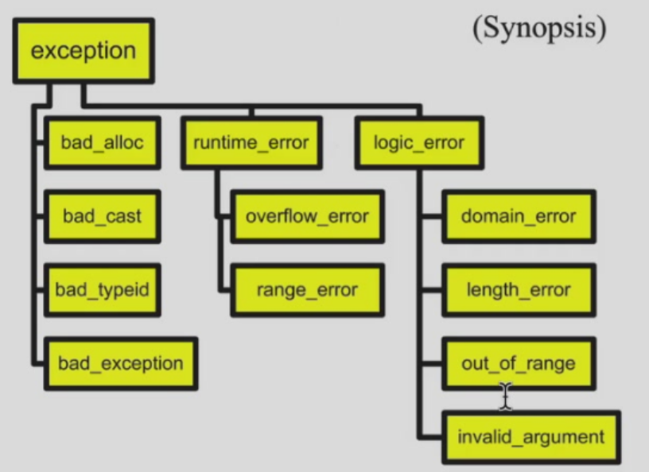
Bad Exception¶
Exception specification
| C++ | |
|---|---|
1 2 3 4 5 6 7 8 9 10 11 12 13 14 15 16 | |
Design considerations¶
Exception should be used for errors
| C++ | |
|---|---|
1 2 3 4 5 6 | |
More exceptions¶
Failure in ctor¶
A* p = new A(); the space is allocated,but no pointer points to it(memory leak)
delete this only for objects newed and a well-written dtor
two stages construction
Ctor cannot raise exception(only variable assignment)
Every operation that need memory allocation should be done after ctor(Additional initialization including file,network connection & memory allocation in Init())
Failure in dtor¶
Stack unwinding:If dtor is called when handling other exceptions,and it throws an exception,call terminate() to terminate the programme
| C++ | |
|---|---|
1 2 3 4 5 6 7 8 9 10 11 12 13 14 15 16 | |
Design and usage¶
| C++ | |
|---|---|
1 2 3 4 5 6 7 8 | |
| C++ | |
|---|---|
1 2 3 4 5 6 | |
| C++ | |
|---|---|
1 2 3 4 5 6 7 8 9 10 11 12 13 14 15 16 17 | |
If an exception is thrown but not caught,
std::terminate() will be called
| C++ | |
|---|---|
1 2 3 | |
Reminder¶
1.return special value is always an efficient way,don't give it up!
2.Exception
3.assert
Smart pointer Week 14¶
goals:reference counting(the object is pointed by how many pointers) for garbage collection
Class UCObject holds the count,UCPointer is a smart pointer to a UCObject
UCPointer is an object implemented using a template and overloads operator-> and unary operator*
| C++ | |
|---|---|
1 2 3 4 5 6 7 8 9 10 11 12 13 14 15 | |
Reference counting¶
| C++ | |
|---|---|
1 2 3 4 | |
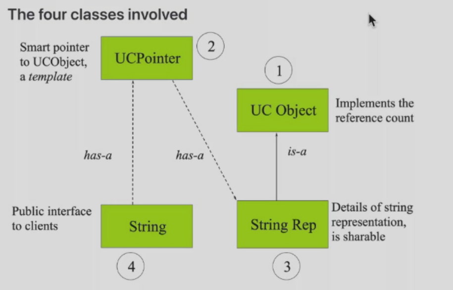
| C++ | |
|---|---|
1 2 3 4 5 6 7 8 9 10 11 12 13 14 15 16 17 18 | |
| C++ | |
|---|---|
1 2 3 4 5 6 7 8 9 10 11 12 13 14 15 16 17 18 19 20 21 22 23 24 25 26 27 28 29 30 31 32 33 | |
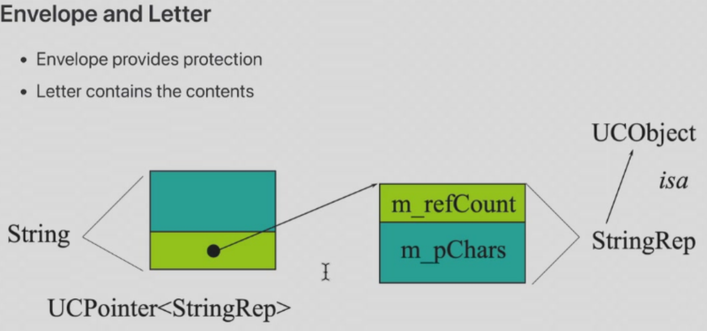
| C++ | |
|---|---|
1 2 3 4 5 6 7 8 9 10 | |
| C++ | |
|---|---|
1 2 3 4 5 6 7 8 9 10 11 12 13 14 15 16 17 18 19 | |
std::auto_ptr can be used as UCPointer
OOP Design Concept Week 15¶
Coupling 耦合 ¶
loose coupling:understand one class without reading others;change one class without affecting others
Make the coupling between reusable parts(可重用) and other classes as loose as possible
call-back¶
回调函数addlistener(Listener *pl)
Ioc:注入反转,发出消息的类构造可接收对象，接收方构造接收子类，通过注册对象调用接收方代码
| C++ | |
|---|---|
1 2 3 4 5 6 7 8 9 10 11 12 13 14 15 16 17 | |
message mech.¶
消息机制：
[model1] 所以对象相互独立，但都注册在一个中央消息机制中，通过向中央发送交给另一对象的字符串实现信息传递（字符串匹配）
[model2] 对消息机制划分角色，对象向中央注册函数
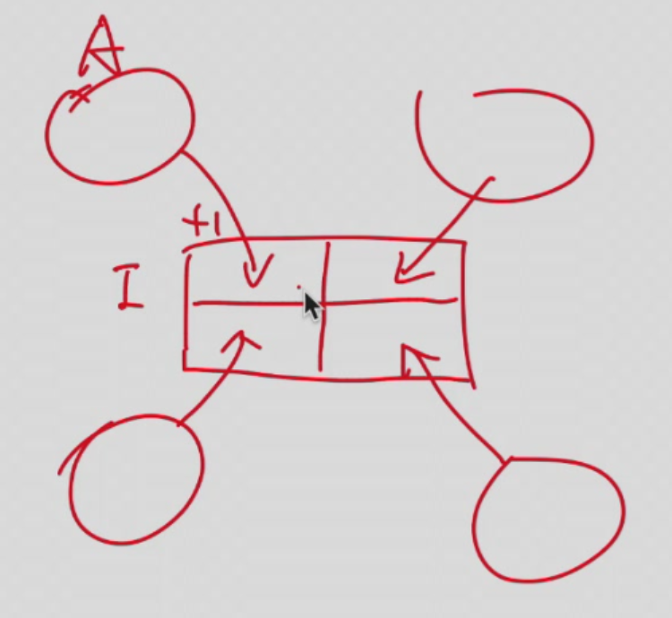
Cohesion 内聚 ¶
[Definition] the number of diversity of tasks that a single unit is responsible for
We aim for high cohesion
Code duplication¶
bad design,hard maintenance
Responsibility-driven design¶
Each class should be responsible for manipulating its own data
localizing change
When a change is needed,as few classes as possible should be affected
Refactoring 重构 ¶
classes and methons should be refactoried to maintain high cohesion and low coupling
Test before and after refactoring
extensibility¶
可扩展性：如果有需求变更，代码不经修改就可以适应新的需求
可维护性：如果有需求变更，代码简单修改就可以适应新的需求
Encapsulation¶
having all the data member private: 限制数据访问，避免非法状态，隐藏实现细节，提高安全性与可维护性，降低耦合
Stream Week 16¶
[Definition] common logical interface to a device,sequential,one-direction & 1D,produce and consume value at a certain position
generic(iostream),file(fstream),string(sstream)
extractor>>,insertor<<,manipulation(change the stream state,e.g.endl)
Kinds of stream¶
1.text stream
text stream is a special kind of binary stream(everything in a computer is binary)
(1)every character is readable
(2)organized by line(\n)
(3)perform some character translation(e.g. binary->text,\n,0d0a -> 0d by Linux kernel)
2.binary stream
no translation
Predefined streams¶
cin,cout,cerr,clog
cerr:unbuffered debugging output
clog:buffered debugging output
| C++ | |
|---|---|
1 2 3 4 5 6 7 8 9 10 11 12 13 14 15 16 17 18 19 20 21 22 23 24 | |
Input Operation¶
| C++ | |
|---|---|
1 2 3 | |
int get()| C++ | |
|---|---|
1 2 3 | |
istream& get(char& ch)(similar to int get())istream& getline(istream& is,string& str,char delim='\n'); free functioncompared,
cin.getline(char* ,int size) is not preferredcin.ignore(int limit=1,int delim=EOF) skip over limit or to delimitint gcount():how many characters read during the last operationvoid pushback(char) on cin:push a character back to streamchar peek():examine next character without reading it (get & pushback)
Output Operation¶
| C++ | |
|---|---|
1 2 3 | |
put(char):prints a single characterflush():force c++ buffer written(whether OS & disk is written cannot be determined)
Manipulator¶
#include<iomanip>
| C++ | |
|---|---|
1 2 3 4 5 | |
dec,hex,oct,endl,flush,setw(int),setfill(char)(左填充),setbase(int)(其他进制),ws(跳过空格),setprecision(int)stream flags
ios::skipws,ios::left,ios::internal(pad between sign and value),ios::dec,ios::showbase,ios::showpoint,ios::uppercase,ios::showpossetiosflags(flags)(按位或),resetiosflags(flags)(置0),setf(flags),unsetf(flags)| C++ | |
|---|---|
1 2 3 4 5 6 7 8 | |
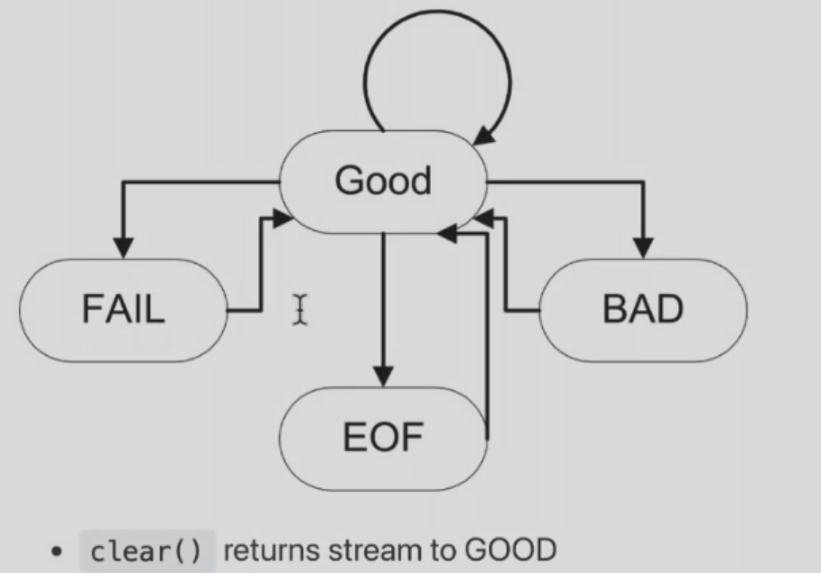
FAIL:操作/数据问题,ignore,clear to GOOD
BAD:用户
checking status:
good(),eof(),fail(),bad()| C++ | |
|---|---|
1 2 3 4 5 6 7 8 9 10 11 12 13 14 15 | |
File Stream¶
In C,fopen(filename,rt) for read text mode
In C++,we have
ios::app(append),ios::ate(position at the end),ios::binary,ios::in,ios::out
| C++ | |
|---|---|
1 2 3 4 5 6 7 8 9 10 11 12 13 14 15 16 17 18 19 20 | |
open(filename,mode)| C++ | |
|---|---|
1 2 3 4 5 | |
Cast Operators 运算符 ¶
1.static_cast:compile time cast(int -> float,parent pointer/reference -> child,void -> T)
| C++ | |
|---|---|
1 2 3 4 5 6 7 8 9 10 | |
2.
dynamic_cast:for Polymorphism(recall up-casting)| C++ | |
|---|---|
1 2 3 4 5 6 7 8 9 10 11 12 13 | |
3.
const_cast:change const/volatile(易变，不能优化，必须与内存做交换) attribute| C++ | |
|---|---|
1 2 3 4 5 | |
reinterpret_cast:any type conversion(maybe dangerous),no type check| C++ | |
|---|---|
1 2 3 4 5 | |
Final Exam¶
不考察：右值引用，移动构造，成员变量构造初始化，代理构造
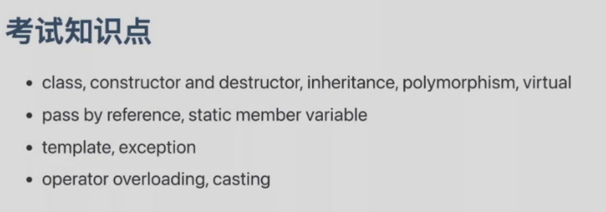
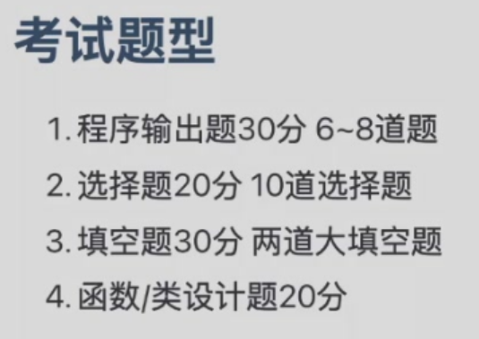
写输出，选择，改错
填空题:exception,overload,template... 设计题:不编译，不运行
Supplement¶
namespace¶
命名空间：划分全局类名避免名字冲突，不同命名空间可以定义相同的变量名
| C++ | |
|---|---|
1 2 3 4 5 6 7 8 9 10 11 12 13 14 15 16 17 18 19 20 21 22 23 24 25 26 27 28 29 30 | |
typeid¶
| C++ | |
|---|---|
1 2 3 4 | |